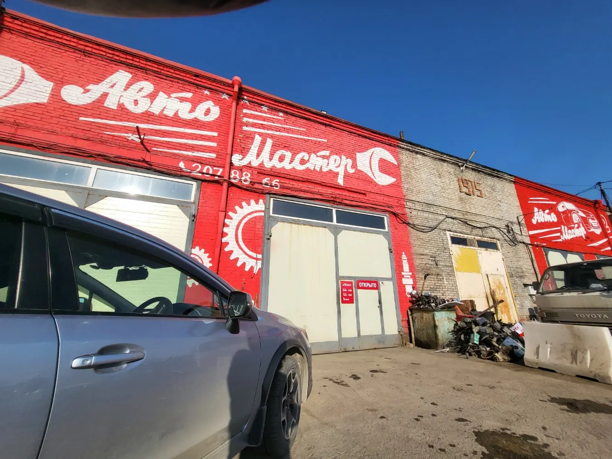
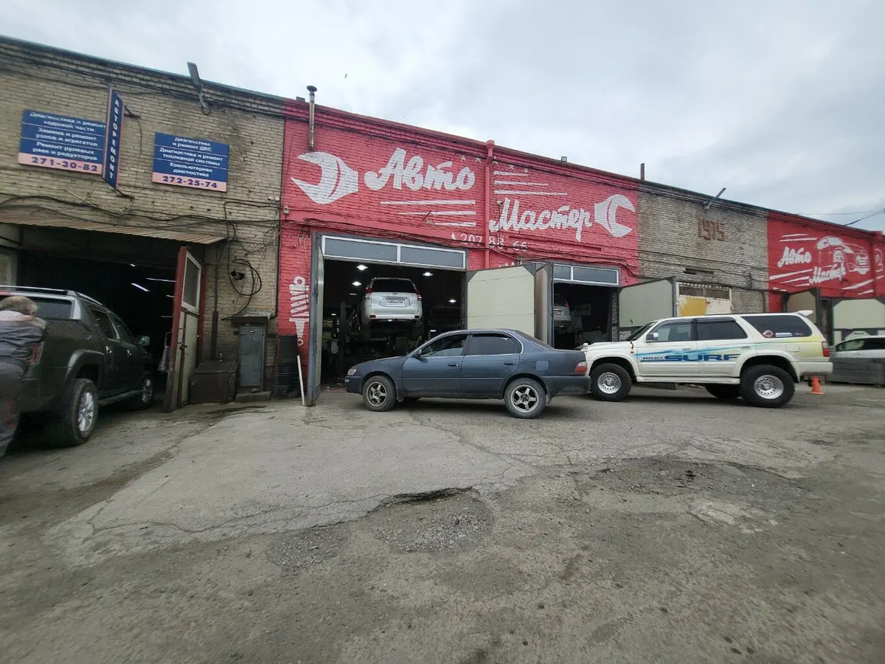
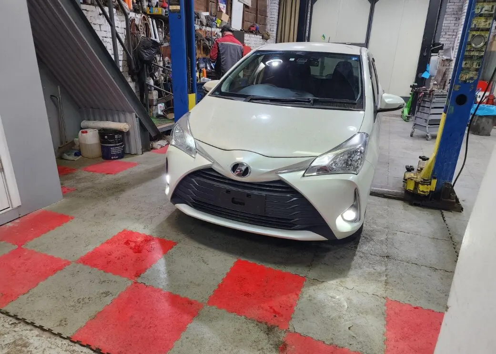
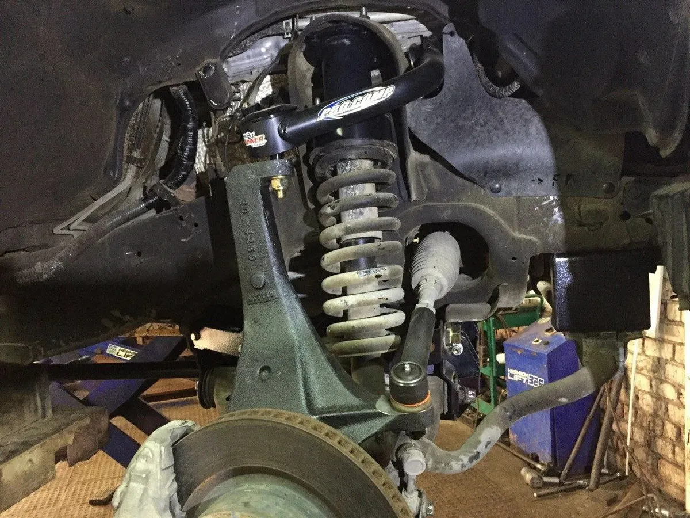

Автосервис, ремонт АКПП и ходовой · Владивосток
Автосервис во Владивостоке: ходовая, АКПП, диагностика, кузовной ремонт
Выберите услугу, день и время - чат откроется с готовым текстом. Японские, корейские, китайские и европейские авто, грузовой сервис.
- Пн-пт 9:00-19:00, сб-вс 10:00-18:00
- Рейтинг 4,9, 173 оценки
- Гарантия, парковка, Wi-Fi

Что ещё есть
Входит
- Гарантия на работы
- Комфортная зона ожидания
- Парковка и Wi-Fi
- Можно с собакой
Отдельно, если нужно
- Предварительная запись
- Скидки и акции
- Оплата наличными, безналом и переводом
Услуги
На карточке на Яндекс.Картах цен нет, поэтому на демо стоят «уточнить». Здесь удобно показать их до звонка.
Диагностика и ходовая
- Компьютерная диагностикаУслуга указана на карточке.уточнить
- Ремонт ходовой части и амортизаторовКлиенты пишут про замену стоек и ремонт ходовой.уточнить
- Ремонт рулевых реек и тормозной системыУслуги указаны на карточке.уточнить
- Замена масла и полное обслуживаниеКлиенты пишут про замену масла.уточнить
Трансмиссия и двигатель
- Ремонт АКПП и КППУслуги указаны на карточке.уточнить
- Ремонт вариатора и замена жидкостиКлиенты пишут про вариатор.уточнить
- Ремонт двигателей, дизеля и турбинУслуги указаны на карточке.уточнить
- Чистка и ремонт форсунокУслуги указаны на карточке.уточнить
Кузов и дополнительно
- Кузовной ремонтУслуга указана на карточке.уточнить
- Сварочные работыУслуга указана на карточке.уточнить
- Установка фаркопаУслуга указана на карточке.уточнить
- Ремонт гибридов и коммерческого транспортаУслуги указаны на карточке.уточнить
Перечень услуг составлен по карточке и отзывам клиентов. Актуальные цены уточняйте при записи.
Как записаться
- 01
Выберите услугу, день и время
В блоке записи вверху страницы.
- 02
Нажмите «Записаться»
Откроется чат с готовым сообщением - останется его отправить.
- 03
Дождитесь подтверждения
Администратор уточнит марку автомобиля и время.



Что говорят клиенты
Лишнего не навязывают
Клиент пишет, что всё по делу и лишнего не предлагают.
Быстро найдут окошко
Клиентка пишет, что стараются найти время на ближайшие дни.
Запчасти
Клиент пишет, что сами найдут и привезут необходимые запчасти.
Чистые боксы
Клиент отмечает чистые боксы и комфортную зону ожидания.
Отзывы с Яндекс.Карт
«Отличный сервис! Мастера грамотные, знают свое дело. Лишнего ничего не навязывают. Все по делу! Подход к своей работе профессиональный. Не выгоняют из ремонтной зоны. Мне меняли вариатор-работой я доволен!»
Артём Никитин · 26 апреля 2026
«Отличный сервис. Грамотные мастера,быстро,чётко, по делу,недорого, а,главное-всегда стараются найти окошко на ближайшее время,чтобы предварительно вынести вердикт о необходимых манипуляцих с автомобилем. В общем, рекомендую!»
Евгения Викторовна · 15 марта 2025
«Отличный сервис, делают все быстро, чистые боксы. Могут сами найти и привезти необходимые запчасти. Ремонтирую тут уже не первую машину. Комфортная зона ожидания.»
Сергей Дворянин · 29 июля 2025
Отзывы с карточки на Яндекс.Картах, без правок.
Частые вопросы
Где находится автосервис?
Владивосток, Снеговая улица, 2А.
Как записаться?
Выберите услугу, день и время в блоке записи вверху страницы - откроется чат с готовым сообщением. Можно позвонить: +7 (423) 207-88-66 или +7 (984) 197-88-66.
С какими автомобилями вы работаете?
По карточке: японские, корейские, китайские, европейские, отечественные, а также грузовые и коммерческие.
Ремонтируете ли вы АКПП и вариаторы?
Да, ремонт АКПП, КПП и вариаторов указан на карточке; клиенты пишут про замену жидкости вариатора.
Есть ли гарантия?
Да, гарантия указана на карточке.
Подбираете ли вы запчасти?
Да, клиент пишет, что сами находят и привозят необходимые запчасти.
Как можно оплатить?
Наличными, безналично, переводом или онлайн.
В какие часы вы работаете?
С понедельника по пятницу с 9:00 до 19:00, в субботу и воскресенье с 10:00 до 18:00.
Записаться в Автомастер
- Адрес
- Снеговая улица, 2А, Владивосток
- Часы
- Пн-пт 09:00-19:00, сб-вс 10:00-18:00
- Телефон
- +7 (423) 207-88-66